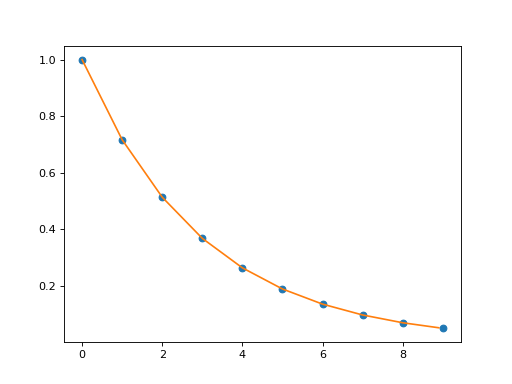
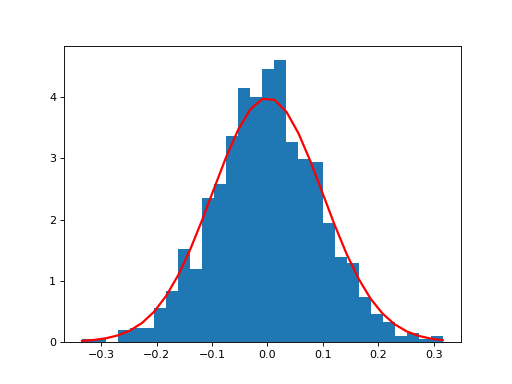
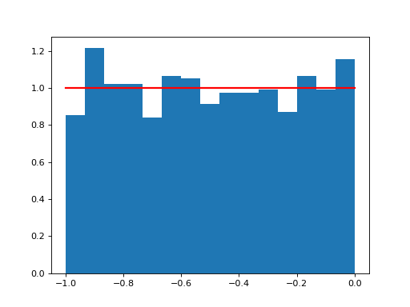

King
- class cosmic.sample.cmc.king.RK45(fun, t0, y0, t_bound, max_step=inf, rtol=0.001, atol=1e-06, vectorized=False, first_step=None, **extraneous)¶
Bases:
scipy.integrate._ivp.rk.RungeKuttaExplicit Runge-Kutta method of order 5(4).
This uses the Dormand-Prince pair of formulas [1]. The error is controlled assuming accuracy of the fourth-order method accuracy, but steps are taken using the fifth-order accurate formula (local extrapolation is done). A quartic interpolation polynomial is used for the dense output [2].
Can be applied in the complex domain.
- Parameters
fun : callable
Right-hand side of the system. The calling signature is
fun(t, y). Heretis a scalar, and there are two options for the ndarrayy: It can either have shape (n,); thenfunmust return array_like with shape (n,). Alternatively it can have shape (n, k); thenfunmust return an array_like with shape (n, k), i.e., each column corresponds to a single column iny. The choice between the two options is determined by vectorized argument (see below).t0 : float
Initial time.
y0 : array_like, shape (n,)
Initial state.
t_bound : float
Boundary time - the integration won’t continue beyond it. It also determines the direction of the integration.
first_step : float or None, optional
Initial step size. Default is
Nonewhich means that the algorithm should choose.max_step : float, optional
Maximum allowed step size. Default is np.inf, i.e., the step size is not bounded and determined solely by the solver.
rtol, atol : float and array_like, optional
Relative and absolute tolerances. The solver keeps the local error estimates less than
atol + rtol * abs(y). Here rtol controls a relative accuracy (number of correct digits). But if a component of y is approximately below atol, the error only needs to fall within the same atol threshold, and the number of correct digits is not guaranteed. If components of y have different scales, it might be beneficial to set different atol values for different components by passing array_like with shape (n,) for atol. Default values are 1e-3 for rtol and 1e-6 for atol.vectorized : bool, optional
Whether fun is implemented in a vectorized fashion. Default is False.
References
- 1
J. R. Dormand, P. J. Prince, “A family of embedded Runge-Kutta formulae”, Journal of Computational and Applied Mathematics, Vol. 6, No. 1, pp. 19-26, 1980.
- 2
L. W. Shampine, “Some Practical Runge-Kutta Formulas”, Mathematics of Computation,, Vol. 46, No. 173, pp. 135-150, 1986.
- Attributes
n : int
Number of equations.
status : string
Current status of the solver: ‘running’, ‘finished’ or ‘failed’.
t_bound : float
Boundary time.
direction : float
Integration direction: +1 or -1.
t : float
Current time.
y : ndarray
Current state.
t_old : float
Previous time. None if no steps were made yet.
step_size : float
Size of the last successful step. None if no steps were made yet.
nfev : int
Number evaluations of the system’s right-hand side.
njev : int
Number of evaluations of the Jacobian. Is always 0 for this solver as it does not use the Jacobian.
nlu : int
Number of LU decompositions. Is always 0 for this solver.
- A: numpy.ndarray = array([[ 0. , 0. , 0. , 0. , 0. ], [ 0.2 , 0. , 0. , 0. , 0. ], [ 0.075 , 0.225 , 0. , 0. , 0. ], [ 0.97777778, -3.73333333, 3.55555556, 0. , 0. ], [ 2.95259869, -11.59579332, 9.82289285, -0.29080933, 0. ], [ 2.84627525, -10.75757576, 8.90642272, 0.27840909, -0.2735313 ]])¶
- B: numpy.ndarray = array([ 0.09114583, 0. , 0.4492363 , 0.65104167, -0.32237618, 0.13095238])¶
- C: numpy.ndarray = array([0. , 0.2 , 0.3 , 0.8 , 0.88888889, 1. ])¶
- E: numpy.ndarray = array([-0.00123264, 0. , 0.00425277, -0.03697917, 0.0508638 , -0.04190476, 0.025 ])¶
- P: numpy.ndarray = array([[ 1. , -2.85358007, 3.07174346, -1.12701757], [ 0. , 0. , 0. , 0. ], [ 0. , 4.02313338, -6.24932157, 2.67542448], [ 0. , -3.73240196, 10.06897059, -5.68552696], [ 0. , 2.55480383, -6.39911238, 3.52193237], [ 0. , -1.37442411, 3.27265775, -1.76728126], [ 0. , 1.38246893, -3.76493786, 2.38246893]])¶
- __doc__ = 'Explicit Runge-Kutta method of order 5(4).\n\n This uses the Dormand-Prince pair of formulas [1]_. The error is controlled\n assuming accuracy of the fourth-order method accuracy, but steps are taken\n using the fifth-order accurate formula (local extrapolation is done).\n A quartic interpolation polynomial is used for the dense output [2]_.\n\n Can be applied in the complex domain.\n\n Parameters\n ----------\n fun : callable\n Right-hand side of the system. The calling signature is ``fun(t, y)``.\n Here ``t`` is a scalar, and there are two options for the ndarray ``y``:\n It can either have shape (n,); then ``fun`` must return array_like with\n shape (n,). Alternatively it can have shape (n, k); then ``fun``\n must return an array_like with shape (n, k), i.e., each column\n corresponds to a single column in ``y``. The choice between the two\n options is determined by `vectorized` argument (see below).\n t0 : float\n Initial time.\n y0 : array_like, shape (n,)\n Initial state.\n t_bound : float\n Boundary time - the integration won\'t continue beyond it. It also\n determines the direction of the integration.\n first_step : float or None, optional\n Initial step size. Default is ``None`` which means that the algorithm\n should choose.\n max_step : float, optional\n Maximum allowed step size. Default is np.inf, i.e., the step size is not\n bounded and determined solely by the solver.\n rtol, atol : float and array_like, optional\n Relative and absolute tolerances. The solver keeps the local error\n estimates less than ``atol + rtol * abs(y)``. Here `rtol` controls a\n relative accuracy (number of correct digits). But if a component of `y`\n is approximately below `atol`, the error only needs to fall within\n the same `atol` threshold, and the number of correct digits is not\n guaranteed. If components of y have different scales, it might be\n beneficial to set different `atol` values for different components by\n passing array_like with shape (n,) for `atol`. Default values are\n 1e-3 for `rtol` and 1e-6 for `atol`.\n vectorized : bool, optional\n Whether `fun` is implemented in a vectorized fashion. Default is False.\n\n Attributes\n ----------\n n : int\n Number of equations.\n status : string\n Current status of the solver: \'running\', \'finished\' or \'failed\'.\n t_bound : float\n Boundary time.\n direction : float\n Integration direction: +1 or -1.\n t : float\n Current time.\n y : ndarray\n Current state.\n t_old : float\n Previous time. None if no steps were made yet.\n step_size : float\n Size of the last successful step. None if no steps were made yet.\n nfev : int\n Number evaluations of the system\'s right-hand side.\n njev : int\n Number of evaluations of the Jacobian. Is always 0 for this solver as it does not use the Jacobian.\n nlu : int\n Number of LU decompositions. Is always 0 for this solver.\n\n References\n ----------\n .. [1] J. R. Dormand, P. J. Prince, "A family of embedded Runge-Kutta\n formulae", Journal of Computational and Applied Mathematics, Vol. 6,\n No. 1, pp. 19-26, 1980.\n .. [2] L. W. Shampine, "Some Practical Runge-Kutta Formulas", Mathematics\n of Computation,, Vol. 46, No. 173, pp. 135-150, 1986.\n '¶
- __module__ = 'scipy.integrate._ivp.rk'¶
- cosmic.sample.cmc.king.calc_rho(w)¶
Returns the density (unnormalized) given w = psi/sigma^2 Note that w(0) = w_0, the main parameter of a King profile
- cosmic.sample.cmc.king.cumtrapz(y, x=None, dx=1.0, axis=- 1, initial=None)¶
An alias of `cumulative_trapezoid.
cumtrapz is kept for backwards compatibility. For new code, prefer cumulative_trapezoid instead.
- cosmic.sample.cmc.king.draw_r_vr_vt(N=100000, w_0=6, tidal_boundary=1e-06)¶
Draw random velocities and positions from the King profile.
N = number of stars w_0 = King concentration parameter (-psi/sigma^2) tidal_boundary = ratio of rho/rho_0 where we truncate the tidal boundary
returns (vr,vt,r) in G=M_cluster=1 units
- cosmic.sample.cmc.king.find_sigma_sqr(r_sample, r, rho_r, M_enclosed)¶
Find the 1D velocity dispersion at a given radius r using one of the spherial Jeans equations (and assuming velocity is isotropic)
- cosmic.sample.cmc.king.get_positions(N, r, M_enclosed)¶
This one’s easy: the mass enclosed function is just the CDF of the mass density, so just invert that, and you’ve got positions.
Note that here we’ve already normalized M_enclosed to 1 at r_tidal
- cosmic.sample.cmc.king.get_velocities(r, r_profile, psi_profile, M_enclosed_profile)¶
The correct way to generate velocities: start from the distribution function and use rejection sampling.
returns (vr,vt) with same length as r
- cosmic.sample.cmc.king.integrate_king_profile(w0, tidal_boundary=1e-06)¶
Integrate a King Profile of a given w_0 until the density (or phi/sigma^2) drops below tidal_boundary limit (1e-8 times the central density by default)
Let’s define some things: The King potential is often expressed in terms of w = psi / sigma^2 (psi is phi0 - phi, so just positive potential) (note that sigma is the central velocity dispersion with an infinitely deep potential, and close otherwise)
in the center, w_0 = psi_0 / sigma^2 (the free parameter of the King profile)
The core radius is defined (King 1966) as r_c = sqrt(9 * sigma^2 / (4 pi G rho_0))
- If we define new scaled quantities
r_tilda = r/r_c rho_tilda = rho/rho_o
- We can rewrite Poisson’s equation, (1/r^2) d/dr (r^2 dphi/dr) = 4 pi G rho as:
d^2(r_tilda w)/dr_tilda^2 = 9 r_tilda rho_tilda
After that, all we need is initial conditions: w(0) = w_0 w’(0) = 0
returns (radii, rho, phi, M_enclosed)
- class cosmic.sample.cmc.king.interp1d(x, y, kind='linear', axis=- 1, copy=True, bounds_error=None, fill_value=nan, assume_sorted=False)¶
Bases:
scipy.interpolate.polyint._Interpolator1DInterpolate a 1-D function.
x and y are arrays of values used to approximate some function f:
y = f(x). This class returns a function whose call method uses interpolation to find the value of new points.- Parameters
x : (N,) array_like
A 1-D array of real values.
y : (…,N,…) array_like
A N-D array of real values. The length of y along the interpolation axis must be equal to the length of x.
kind : str or int, optional
Specifies the kind of interpolation as a string or as an integer specifying the order of the spline interpolator to use. The string has to be one of ‘linear’, ‘nearest’, ‘nearest-up’, ‘zero’, ‘slinear’, ‘quadratic’, ‘cubic’, ‘previous’, or ‘next’. ‘zero’, ‘slinear’, ‘quadratic’ and ‘cubic’ refer to a spline interpolation of zeroth, first, second or third order; ‘previous’ and ‘next’ simply return the previous or next value of the point; ‘nearest-up’ and ‘nearest’ differ when interpolating half-integers (e.g. 0.5, 1.5) in that ‘nearest-up’ rounds up and ‘nearest’ rounds down. Default is ‘linear’.
axis : int, optional
Specifies the axis of y along which to interpolate. Interpolation defaults to the last axis of y.
copy : bool, optional
If True, the class makes internal copies of x and y. If False, references to x and y are used. The default is to copy.
bounds_error : bool, optional
If True, a ValueError is raised any time interpolation is attempted on a value outside of the range of x (where extrapolation is necessary). If False, out of bounds values are assigned fill_value. By default, an error is raised unless
fill_value="extrapolate".fill_value : array-like or (array-like, array_like) or “extrapolate”, optional
if a ndarray (or float), this value will be used to fill in for requested points outside of the data range. If not provided, then the default is NaN. The array-like must broadcast properly to the dimensions of the non-interpolation axes.
If a two-element tuple, then the first element is used as a fill value for
x_new < x[0]and the second element is used forx_new > x[-1]. Anything that is not a 2-element tuple (e.g., list or ndarray, regardless of shape) is taken to be a single array-like argument meant to be used for both bounds asbelow, above = fill_value, fill_value.New in version 0.17.0.
If “extrapolate”, then points outside the data range will be extrapolated.
New in version 0.17.0.
assume_sorted : bool, optional
If False, values of x can be in any order and they are sorted first. If True, x has to be an array of monotonically increasing values.
See also
splrep,splevSpline interpolation/smoothing based on FITPACK.
UnivariateSplineAn object-oriented wrapper of the FITPACK routines.
interp2d2-D interpolation
Notes
Calling interp1d with NaNs present in input values results in undefined behaviour.
Input values x and y must be convertible to float values like int or float.
If the values in x are not unique, the resulting behavior is undefined and specific to the choice of kind, i.e., changing kind will change the behavior for duplicates.
Examples
(Source code, png, hires.png, pdf)
- Attributes
-
The fill value.
Methods
__call__(x)Evaluate the interpolant
- __dict__ = mappingproxy({'__module__': 'scipy.interpolate.interpolate', '__doc__': '\n Interpolate a 1-D function.\n\n `x` and `y` are arrays of values used to approximate some function f:\n ``y = f(x)``. This class returns a function whose call method uses\n interpolation to find the value of new points.\n\n Parameters\n ----------\n x : (N,) array_like\n A 1-D array of real values.\n y : (...,N,...) array_like\n A N-D array of real values. The length of `y` along the interpolation\n axis must be equal to the length of `x`.\n kind : str or int, optional\n Specifies the kind of interpolation as a string or as an integer\n specifying the order of the spline interpolator to use.\n The string has to be one of \'linear\', \'nearest\', \'nearest-up\', \'zero\',\n \'slinear\', \'quadratic\', \'cubic\', \'previous\', or \'next\'. \'zero\',\n \'slinear\', \'quadratic\' and \'cubic\' refer to a spline interpolation of\n zeroth, first, second or third order; \'previous\' and \'next\' simply\n return the previous or next value of the point; \'nearest-up\' and\n \'nearest\' differ when interpolating half-integers (e.g. 0.5, 1.5)\n in that \'nearest-up\' rounds up and \'nearest\' rounds down. Default\n is \'linear\'.\n axis : int, optional\n Specifies the axis of `y` along which to interpolate.\n Interpolation defaults to the last axis of `y`.\n copy : bool, optional\n If True, the class makes internal copies of x and y.\n If False, references to `x` and `y` are used. The default is to copy.\n bounds_error : bool, optional\n If True, a ValueError is raised any time interpolation is attempted on\n a value outside of the range of x (where extrapolation is\n necessary). If False, out of bounds values are assigned `fill_value`.\n By default, an error is raised unless ``fill_value="extrapolate"``.\n fill_value : array-like or (array-like, array_like) or "extrapolate", optional\n - if a ndarray (or float), this value will be used to fill in for\n requested points outside of the data range. If not provided, then\n the default is NaN. The array-like must broadcast properly to the\n dimensions of the non-interpolation axes.\n - If a two-element tuple, then the first element is used as a\n fill value for ``x_new < x[0]`` and the second element is used for\n ``x_new > x[-1]``. Anything that is not a 2-element tuple (e.g.,\n list or ndarray, regardless of shape) is taken to be a single\n array-like argument meant to be used for both bounds as\n ``below, above = fill_value, fill_value``.\n\n .. versionadded:: 0.17.0\n - If "extrapolate", then points outside the data range will be\n extrapolated.\n\n .. versionadded:: 0.17.0\n assume_sorted : bool, optional\n If False, values of `x` can be in any order and they are sorted first.\n If True, `x` has to be an array of monotonically increasing values.\n\n Attributes\n ----------\n fill_value\n\n Methods\n -------\n __call__\n\n See Also\n --------\n splrep, splev\n Spline interpolation/smoothing based on FITPACK.\n UnivariateSpline : An object-oriented wrapper of the FITPACK routines.\n interp2d : 2-D interpolation\n\n Notes\n -----\n Calling `interp1d` with NaNs present in input values results in\n undefined behaviour.\n\n Input values `x` and `y` must be convertible to `float` values like\n `int` or `float`.\n \n If the values in `x` are not unique, the resulting behavior is\n undefined and specific to the choice of `kind`, i.e., changing\n `kind` will change the behavior for duplicates.\n\n\n Examples\n --------\n >>> import matplotlib.pyplot as plt\n >>> from scipy import interpolate\n >>> x = np.arange(0, 10)\n >>> y = np.exp(-x/3.0)\n >>> f = interpolate.interp1d(x, y)\n\n >>> xnew = np.arange(0, 9, 0.1)\n >>> ynew = f(xnew) # use interpolation function returned by `interp1d`\n >>> plt.plot(x, y, \'o\', xnew, ynew, \'-\')\n >>> plt.show()\n ', '__init__': <function interp1d.__init__>, 'fill_value': <property object>, '_call_linear_np': <function interp1d._call_linear_np>, '_call_linear': <function interp1d._call_linear>, '_call_nearest': <function interp1d._call_nearest>, '_call_previousnext': <function interp1d._call_previousnext>, '_call_spline': <function interp1d._call_spline>, '_call_nan_spline': <function interp1d._call_nan_spline>, '_evaluate': <function interp1d._evaluate>, '_check_bounds': <function interp1d._check_bounds>, '__dict__': <attribute '__dict__' of 'interp1d' objects>, '__weakref__': <attribute '__weakref__' of 'interp1d' objects>, '__annotations__': {}})¶
- __doc__ = '\n Interpolate a 1-D function.\n\n `x` and `y` are arrays of values used to approximate some function f:\n ``y = f(x)``. This class returns a function whose call method uses\n interpolation to find the value of new points.\n\n Parameters\n ----------\n x : (N,) array_like\n A 1-D array of real values.\n y : (...,N,...) array_like\n A N-D array of real values. The length of `y` along the interpolation\n axis must be equal to the length of `x`.\n kind : str or int, optional\n Specifies the kind of interpolation as a string or as an integer\n specifying the order of the spline interpolator to use.\n The string has to be one of \'linear\', \'nearest\', \'nearest-up\', \'zero\',\n \'slinear\', \'quadratic\', \'cubic\', \'previous\', or \'next\'. \'zero\',\n \'slinear\', \'quadratic\' and \'cubic\' refer to a spline interpolation of\n zeroth, first, second or third order; \'previous\' and \'next\' simply\n return the previous or next value of the point; \'nearest-up\' and\n \'nearest\' differ when interpolating half-integers (e.g. 0.5, 1.5)\n in that \'nearest-up\' rounds up and \'nearest\' rounds down. Default\n is \'linear\'.\n axis : int, optional\n Specifies the axis of `y` along which to interpolate.\n Interpolation defaults to the last axis of `y`.\n copy : bool, optional\n If True, the class makes internal copies of x and y.\n If False, references to `x` and `y` are used. The default is to copy.\n bounds_error : bool, optional\n If True, a ValueError is raised any time interpolation is attempted on\n a value outside of the range of x (where extrapolation is\n necessary). If False, out of bounds values are assigned `fill_value`.\n By default, an error is raised unless ``fill_value="extrapolate"``.\n fill_value : array-like or (array-like, array_like) or "extrapolate", optional\n - if a ndarray (or float), this value will be used to fill in for\n requested points outside of the data range. If not provided, then\n the default is NaN. The array-like must broadcast properly to the\n dimensions of the non-interpolation axes.\n - If a two-element tuple, then the first element is used as a\n fill value for ``x_new < x[0]`` and the second element is used for\n ``x_new > x[-1]``. Anything that is not a 2-element tuple (e.g.,\n list or ndarray, regardless of shape) is taken to be a single\n array-like argument meant to be used for both bounds as\n ``below, above = fill_value, fill_value``.\n\n .. versionadded:: 0.17.0\n - If "extrapolate", then points outside the data range will be\n extrapolated.\n\n .. versionadded:: 0.17.0\n assume_sorted : bool, optional\n If False, values of `x` can be in any order and they are sorted first.\n If True, `x` has to be an array of monotonically increasing values.\n\n Attributes\n ----------\n fill_value\n\n Methods\n -------\n __call__\n\n See Also\n --------\n splrep, splev\n Spline interpolation/smoothing based on FITPACK.\n UnivariateSpline : An object-oriented wrapper of the FITPACK routines.\n interp2d : 2-D interpolation\n\n Notes\n -----\n Calling `interp1d` with NaNs present in input values results in\n undefined behaviour.\n\n Input values `x` and `y` must be convertible to `float` values like\n `int` or `float`.\n \n If the values in `x` are not unique, the resulting behavior is\n undefined and specific to the choice of `kind`, i.e., changing\n `kind` will change the behavior for duplicates.\n\n\n Examples\n --------\n >>> import matplotlib.pyplot as plt\n >>> from scipy import interpolate\n >>> x = np.arange(0, 10)\n >>> y = np.exp(-x/3.0)\n >>> f = interpolate.interp1d(x, y)\n\n >>> xnew = np.arange(0, 9, 0.1)\n >>> ynew = f(xnew) # use interpolation function returned by `interp1d`\n >>> plt.plot(x, y, \'o\', xnew, ynew, \'-\')\n >>> plt.show()\n '¶
- __init__(x, y, kind='linear', axis=- 1, copy=True, bounds_error=None, fill_value=nan, assume_sorted=False)¶
Initialize a 1-D linear interpolation class.
- __module__ = 'scipy.interpolate.interpolate'¶
- __weakref__¶
list of weak references to the object (if defined)
- _call_linear(x_new)¶
- _call_linear_np(x_new)¶
- _call_nan_spline(x_new)¶
- _call_nearest(x_new)¶
Find nearest neighbor interpolated y_new = f(x_new).
- _call_previousnext(x_new)¶
Use previous/next neighbor of x_new, y_new = f(x_new).
- _call_spline(x_new)¶
- _check_bounds(x_new)¶
Check the inputs for being in the bounds of the interpolated data.
- Parameters
- x_newarray
- Returns
out_of_bounds : bool array
The mask on x_new of values that are out of the bounds.
- _evaluate(x_new)¶
Actually evaluate the value of the interpolator.
- _y_axis¶
- _y_extra_shape¶
- dtype¶
- property fill_value¶
The fill value.
{kind=link}
{kind=link}
- cosmic.sample.cmc.king.normal(loc=0.0, scale=1.0, size=None)¶
Draw random samples from a normal (Gaussian) distribution.
The probability density function of the normal distribution, first derived by De Moivre and 200 years later by both Gauss and Laplace independently [2], is often called the bell curve because of its characteristic shape (see the example below).
The normal distributions occurs often in nature. For example, it describes the commonly occurring distribution of samples influenced by a large number of tiny, random disturbances, each with its own unique distribution [2].
Note
New code should use the
normalmethod of adefault_rng()instance instead; please see the Quick Start.- Parameters
loc : float or array_like of floats
Mean (“centre”) of the distribution.
scale : float or array_like of floats
Standard deviation (spread or “width”) of the distribution. Must be non-negative.
size : int or tuple of ints, optional
Output shape. If the given shape is, e.g.,
(m, n, k), thenm * n * ksamples are drawn. If size isNone(default), a single value is returned iflocandscaleare both scalars. Otherwise,np.broadcast(loc, scale).sizesamples are drawn.- Returns
out : ndarray or scalar
Drawn samples from the parameterized normal distribution.
See also
scipy.stats.normprobability density function, distribution or cumulative density function, etc.
Generator.normalwhich should be used for new code.
Notes
The probability density for the Gaussian distribution is
p(x) = \frac{1}{\sqrt{ 2 \pi \sigma^2 }} e^{ - \frac{ (x - \mu)^2 } {2 \sigma^2} },
where \mu is the mean and \sigma the standard deviation. The square of the standard deviation, \sigma^2, is called the variance.
The function has its peak at the mean, and its “spread” increases with the standard deviation (the function reaches 0.607 times its maximum at x + \sigma and x - \sigma [2]). This implies that normal is more likely to return samples lying close to the mean, rather than those far away.
References
- 1
Wikipedia, “Normal distribution”, https://en.wikipedia.org/wiki/Normal_distribution
- 2(1,2,3)
P. R. Peebles Jr., “Central Limit Theorem” in “Probability, Random Variables and Random Signal Principles”, 4th ed., 2001, pp. 51, 51, 125.
Examples
(Source code, png, hires.png, pdf)

{kind=link}
{kind=link}
- cosmic.sample.cmc.king.quad(func, a, b, args=(), full_output=0, epsabs=1.49e-08, epsrel=1.49e-08, limit=50, points=None, weight=None, wvar=None, wopts=None, maxp1=50, limlst=50)¶
Compute a definite integral.
Integrate func from a to b (possibly infinite interval) using a technique from the Fortran library QUADPACK.
- Parameters
func : {function, scipy.LowLevelCallable}
A Python function or method to integrate. If func takes many arguments, it is integrated along the axis corresponding to the first argument.
If the user desires improved integration performance, then f may be a scipy.LowLevelCallable with one of the signatures:
double func(double x) double func(double x, void *user_data) double func(int n, double *xx) double func(int n, double *xx, void *user_data)
The
user_datais the data contained in the scipy.LowLevelCallable. In the call forms withxx,nis the length of thexxarray which containsxx[0] == xand the rest of the items are numbers contained in theargsargument of quad.In addition, certain ctypes call signatures are supported for backward compatibility, but those should not be used in new code.
a : float
Lower limit of integration (use -numpy.inf for -infinity).
b : float
Upper limit of integration (use numpy.inf for +infinity).
args : tuple, optional
Extra arguments to pass to func.
full_output : int, optional
Non-zero to return a dictionary of integration information. If non-zero, warning messages are also suppressed and the message is appended to the output tuple.
- Returns
y : float
The integral of func from a to b.
abserr : float
An estimate of the absolute error in the result.
infodict : dict
A dictionary containing additional information. Run scipy.integrate.quad_explain() for more information.
message
A convergence message.
explain
Appended only with ‘cos’ or ‘sin’ weighting and infinite integration limits, it contains an explanation of the codes in infodict[‘ierlst’]
- Other Parameters
epsabs : float or int, optional
Absolute error tolerance. Default is 1.49e-8. quad tries to obtain an accuracy of
abs(i-result) <= max(epsabs, epsrel*abs(i))wherei= integral of func from a to b, andresultis the numerical approximation. See epsrel below.epsrel : float or int, optional
Relative error tolerance. Default is 1.49e-8. If
epsabs <= 0, epsrel must be greater than both 5e-29 and50 * (machine epsilon). See epsabs above.limit : float or int, optional
An upper bound on the number of subintervals used in the adaptive algorithm.
points : (sequence of floats,ints), optional
A sequence of break points in the bounded integration interval where local difficulties of the integrand may occur (e.g., singularities, discontinuities). The sequence does not have to be sorted. Note that this option cannot be used in conjunction with
weight.weight : float or int, optional
String indicating weighting function. Full explanation for this and the remaining arguments can be found below.
wvar : optional
Variables for use with weighting functions.
wopts : optional
Optional input for reusing Chebyshev moments.
maxp1 : float or int, optional
An upper bound on the number of Chebyshev moments.
limlst : int, optional
Upper bound on the number of cycles (>=3) for use with a sinusoidal weighting and an infinite end-point.
See also
dblquaddouble integral
tplquadtriple integral
nquadn-dimensional integrals (uses quad recursively)
fixed_quadfixed-order Gaussian quadrature
quadratureadaptive Gaussian quadrature
odeintODE integrator
odeODE integrator
simpsonintegrator for sampled data
rombintegrator for sampled data
scipy.specialfor coefficients and roots of orthogonal polynomials
Notes
Extra information for quad() inputs and outputs
If full_output is non-zero, then the third output argument (infodict) is a dictionary with entries as tabulated below. For infinite limits, the range is transformed to (0,1) and the optional outputs are given with respect to this transformed range. Let M be the input argument limit and let K be infodict[‘last’]. The entries are:
- ‘neval’
The number of function evaluations.
- ‘last’
The number, K, of subintervals produced in the subdivision process.
- ‘alist’
A rank-1 array of length M, the first K elements of which are the left end points of the subintervals in the partition of the integration range.
- ‘blist’
A rank-1 array of length M, the first K elements of which are the right end points of the subintervals.
- ‘rlist’
A rank-1 array of length M, the first K elements of which are the integral approximations on the subintervals.
- ‘elist’
A rank-1 array of length M, the first K elements of which are the moduli of the absolute error estimates on the subintervals.
- ‘iord’
A rank-1 integer array of length M, the first L elements of which are pointers to the error estimates over the subintervals with
L=KifK<=M/2+2orL=M+1-Kotherwise. Let I be the sequenceinfodict['iord']and let E be the sequenceinfodict['elist']. ThenE[I[1]], ..., E[I[L]]forms a decreasing sequence.
If the input argument points is provided (i.e., it is not None), the following additional outputs are placed in the output dictionary. Assume the points sequence is of length P.
- ‘pts’
A rank-1 array of length P+2 containing the integration limits and the break points of the intervals in ascending order. This is an array giving the subintervals over which integration will occur.
- ‘level’
A rank-1 integer array of length M (=limit), containing the subdivision levels of the subintervals, i.e., if (aa,bb) is a subinterval of
(pts[1], pts[2])wherepts[0]andpts[2]are adjacent elements ofinfodict['pts'], then (aa,bb) has level l if|bb-aa| = |pts[2]-pts[1]| * 2**(-l).- ‘ndin’
A rank-1 integer array of length P+2. After the first integration over the intervals (pts[1], pts[2]), the error estimates over some of the intervals may have been increased artificially in order to put their subdivision forward. This array has ones in slots corresponding to the subintervals for which this happens.
Weighting the integrand
The input variables, weight and wvar, are used to weight the integrand by a select list of functions. Different integration methods are used to compute the integral with these weighting functions, and these do not support specifying break points. The possible values of weight and the corresponding weighting functions are.
weightWeight function used
wvar‘cos’
cos(w*x)
wvar = w
‘sin’
sin(w*x)
wvar = w
‘alg’
g(x) = ((x-a)**alpha)*((b-x)**beta)
wvar = (alpha, beta)
‘alg-loga’
g(x)*log(x-a)
wvar = (alpha, beta)
‘alg-logb’
g(x)*log(b-x)
wvar = (alpha, beta)
‘alg-log’
g(x)*log(x-a)*log(b-x)
wvar = (alpha, beta)
‘cauchy’
1/(x-c)
wvar = c
wvar holds the parameter w, (alpha, beta), or c depending on the weight selected. In these expressions, a and b are the integration limits.
For the ‘cos’ and ‘sin’ weighting, additional inputs and outputs are available.
For finite integration limits, the integration is performed using a Clenshaw-Curtis method which uses Chebyshev moments. For repeated calculations, these moments are saved in the output dictionary:
- ‘momcom’
The maximum level of Chebyshev moments that have been computed, i.e., if
M_cisinfodict['momcom']then the moments have been computed for intervals of length|b-a| * 2**(-l),l=0,1,...,M_c.- ‘nnlog’
A rank-1 integer array of length M(=limit), containing the subdivision levels of the subintervals, i.e., an element of this array is equal to l if the corresponding subinterval is
|b-a|* 2**(-l).- ‘chebmo’
A rank-2 array of shape (25, maxp1) containing the computed Chebyshev moments. These can be passed on to an integration over the same interval by passing this array as the second element of the sequence wopts and passing infodict[‘momcom’] as the first element.
If one of the integration limits is infinite, then a Fourier integral is computed (assuming w neq 0). If full_output is 1 and a numerical error is encountered, besides the error message attached to the output tuple, a dictionary is also appended to the output tuple which translates the error codes in the array
info['ierlst']to English messages. The output information dictionary contains the following entries instead of ‘last’, ‘alist’, ‘blist’, ‘rlist’, and ‘elist’:- ‘lst’
The number of subintervals needed for the integration (call it
K_f).- ‘rslst’
A rank-1 array of length M_f=limlst, whose first
K_felements contain the integral contribution over the interval(a+(k-1)c, a+kc)wherec = (2*floor(|w|) + 1) * pi / |w|andk=1,2,...,K_f.- ‘erlst’
A rank-1 array of length
M_fcontaining the error estimate corresponding to the interval in the same position ininfodict['rslist'].- ‘ierlst’
A rank-1 integer array of length
M_fcontaining an error flag corresponding to the interval in the same position ininfodict['rslist']. See the explanation dictionary (last entry in the output tuple) for the meaning of the codes.
Examples
Calculate \int^4_0 x^2 dx and compare with an analytic result
>>> from scipy import integrate >>> x2 = lambda x: x**2 >>> integrate.quad(x2, 0, 4) (21.333333333333332, 2.3684757858670003e-13) >>> print(4**3 / 3.) # analytical result 21.3333333333
Calculate \int^\infty_0 e^{-x} dx
>>> invexp = lambda x: np.exp(-x) >>> integrate.quad(invexp, 0, np.inf) (1.0, 5.842605999138044e-11)
>>> f = lambda x,a : a*x >>> y, err = integrate.quad(f, 0, 1, args=(1,)) >>> y 0.5 >>> y, err = integrate.quad(f, 0, 1, args=(3,)) >>> y 1.5
Calculate \int^1_0 x^2 + y^2 dx with ctypes, holding y parameter as 1:
testlib.c => double func(int n, double args[n]){ return args[0]*args[0] + args[1]*args[1];} compile to library testlib.*
from scipy import integrate import ctypes lib = ctypes.CDLL('/home/.../testlib.*') #use absolute path lib.func.restype = ctypes.c_double lib.func.argtypes = (ctypes.c_int,ctypes.c_double) integrate.quad(lib.func,0,1,(1)) #(1.3333333333333333, 1.4802973661668752e-14) print((1.0**3/3.0 + 1.0) - (0.0**3/3.0 + 0.0)) #Analytic result # 1.3333333333333333
Be aware that pulse shapes and other sharp features as compared to the size of the integration interval may not be integrated correctly using this method. A simplified example of this limitation is integrating a y-axis reflected step function with many zero values within the integrals bounds.
>>> y = lambda x: 1 if x<=0 else 0 >>> integrate.quad(y, -1, 1) (1.0, 1.1102230246251565e-14) >>> integrate.quad(y, -1, 100) (1.0000000002199108, 1.0189464580163188e-08) >>> integrate.quad(y, -1, 10000) (0.0, 0.0)
- cosmic.sample.cmc.king.scale_pos_and_vel(r, vr, vt)¶
Scale the positions and velocities to be in N-body units If we add binaries we’ll do this again in initialcmctable.py
takes r, vr, and vt as input
returns (r,vr,vt) scaled to Henon units
- cosmic.sample.cmc.king.simps(y, x=None, dx=1.0, axis=- 1, even='avg')¶
An alias of `simpson.
simps is kept for backwards compatibility. For new code, prefer simpson instead.
- cosmic.sample.cmc.king.uniform(low=0.0, high=1.0, size=None)¶
Draw samples from a uniform distribution.
Samples are uniformly distributed over the half-open interval
[low, high)(includes low, but excludes high). In other words, any value within the given interval is equally likely to be drawn by uniform.Note
New code should use the
uniformmethod of adefault_rng()instance instead; please see the Quick Start.- Parameters
low : float or array_like of floats, optional
Lower boundary of the output interval. All values generated will be greater than or equal to low. The default value is 0.
high : float or array_like of floats
Upper boundary of the output interval. All values generated will be less than or equal to high. The default value is 1.0.
size : int or tuple of ints, optional
Output shape. If the given shape is, e.g.,
(m, n, k), thenm * n * ksamples are drawn. If size isNone(default), a single value is returned iflowandhighare both scalars. Otherwise,np.broadcast(low, high).sizesamples are drawn.- Returns
out : ndarray or scalar
Drawn samples from the parameterized uniform distribution.
See also
randintDiscrete uniform distribution, yielding integers.
random_integersDiscrete uniform distribution over the closed interval
[low, high].random_sampleFloats uniformly distributed over
[0, 1).randomAlias for random_sample.
randConvenience function that accepts dimensions as input, e.g.,
rand(2,2)would generate a 2-by-2 array of floats, uniformly distributed over[0, 1).Generator.uniformwhich should be used for new code.
Notes
The probability density function of the uniform distribution is
p(x) = \frac{1}{b - a}
anywhere within the interval
[a, b), and zero elsewhere.When
high==low, values oflowwill be returned. Ifhigh<low, the results are officially undefined and may eventually raise an error, i.e. do not rely on this function to behave when passed arguments satisfying that inequality condition. Thehighlimit may be included in the returned array of floats due to floating-point rounding in the equationlow + (high-low) * random_sample(). For example:>>> x = np.float32(5*0.99999999) >>> x 5.0
Examples
(Source code, png, hires.png, pdf)

{kind=link}
{kind=link}
- cosmic.sample.cmc.king.virial_radius_numerical(r, rho_r, M_enclosed)¶
Virial radius is best calculated directly. Directly integrate 4*pi*r*rho*m_enclosed over the samples binding energy, then just divide 0.5 by that.